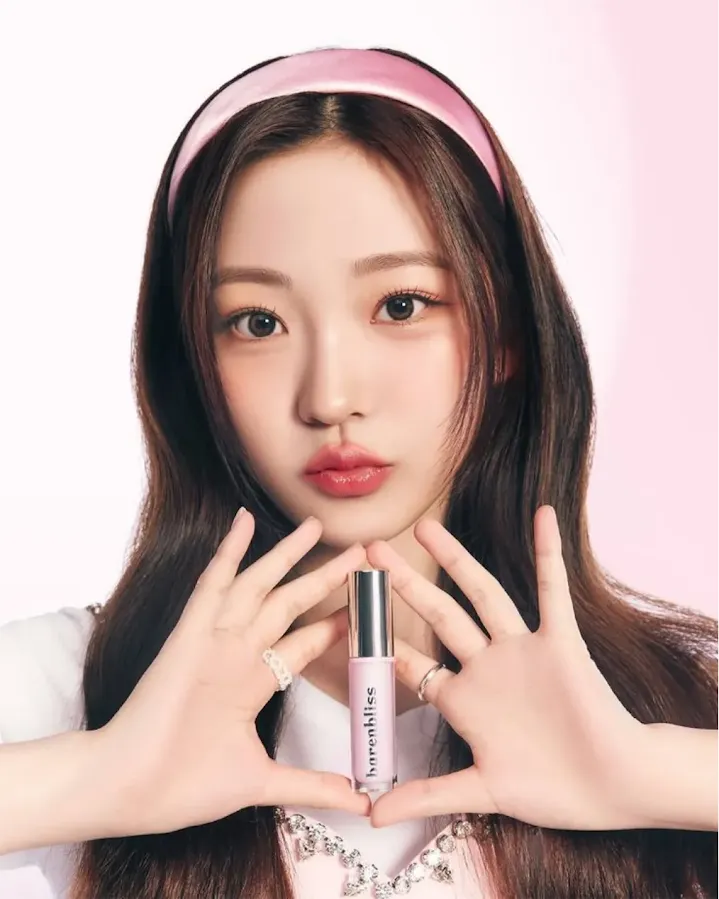
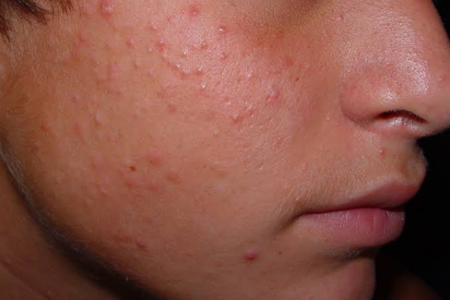

Es un órgano
La piel es el órgano más grande del cuerpo humano y cumple funciones esenciales para mantener el organismo protegido y en equilibrio.
La piel hace bastante más que estar ahí. Protege, regula, percibe y participa en procesos esenciales del organismo.

El material destaca varias funciones que ayudan a entender por qué la piel es importante y cómo se relaciona con el acné.
La piel es el órgano más grande del cuerpo humano y cumple funciones esenciales para mantener el organismo protegido y en equilibrio.
Protege frente a traumatismos, sustancias químicas, microorganismos y radiación ultravioleta.
La piel ayuda a regular la temperatura corporal y contribuye a conservar líquidos y nutrientes.
Participa en la percepción de diferentes estímulos gracias a su función sensitiva.
La piel interviene en la síntesis de vitamina D, una de sus funciones biológicas.
Ayuda a mantener la hidratación, disminuir la fricción y ofrecer protección frente a microorganismos.

La piel participa en varias funciones simultáneas. No es solo una cubierta externa, sino un tejido que responde al ambiente y ayuda a mantener el equilibrio del organismo.

Durante la pubertad, las hormonas sexuales, especialmente los andrógenos, pueden estimular una mayor producción de sebo.


Una producción excesiva de sebo puede favorecer la aparición del acné, especialmente cuando se combina con obstrucción e inflamación.